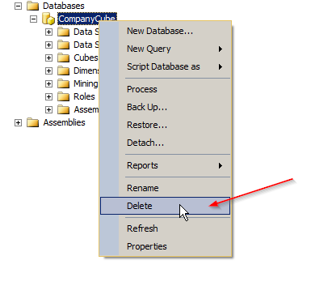
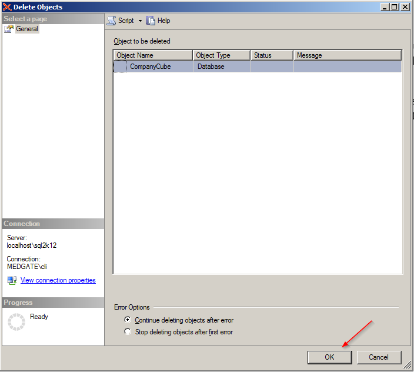

The Data Cube must be upgraded whenever there is a creation script included in the release package (e.g., Cube_Create_2018.2.xmla). To upgrade the Data Cube, you must delete the existing Data Cube and re-create it using the latest creation script.
Open SSMS.
In the Object Explorer, select Connect > Analysis Services, connect to the Analysis Service instance that hosts your Data Cube.
Right-click the Data Cube and click Delete.

Click OK on the Delete Objects dialog box.

Follow the steps in subsection 7.3 to re-create the Data Cube.